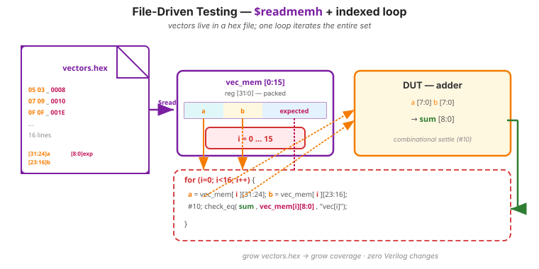
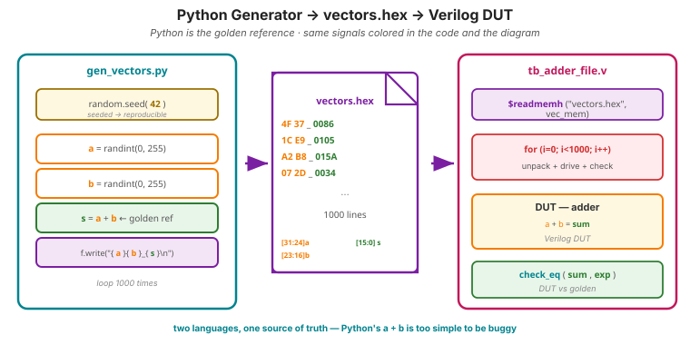
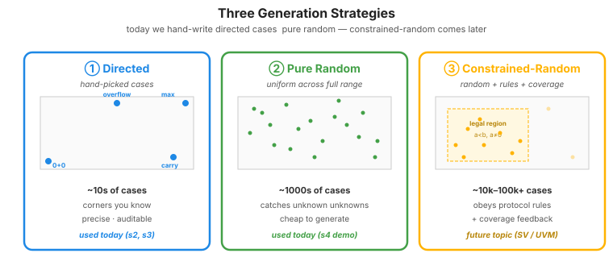

Video 4 of 4 · ~10 minutes
Dr. Mike Borowczak · Electrical & Computer Engineering · CECS · UCF
When a CPU vendor checks an instruction decoder, they run a C reference and the RTL in parallel against the same million-instruction file, comparing every cycle. When SpaceX checks an avionics box, the input file is the recording of an actual flight. When a memory vendor checks a controller, the trace is captured from a real Linux boot. Real inputs, replayed end-to-end.
Mars Climate Orbiter burned in the Martian atmosphere because two teams used different units. The conversion was tested. The trajectory was tested. The actual recorded sequence of commands from the real mission profile, fed end-to-end through the combined system, was never tried. The data wasn't hard to find. Nobody had a clean way to feed it in.
“I'll add new test cases as new lines of Verilog in my testbench. If I need 10,000 cases I'll generate a 10,000-line testbench.”
The testbench logic (apply input, wait, check output) stays the same. The test data (what input, what expected output) lives in an external file. Your testbench loops over the file's contents. Adding new cases = editing the data file, not the Verilog.
$readmemh loads hex values from a text file into a Verilog memory array at simulation start. Combined with a loop, one initial block runs arbitrarily many vectors.
$readmemh and the Test Loop// vectors.hex: 16 lines, 8 hex chars each = {a[7:0], b[7:0], expected_sum[8:0]}
// 0503_0008
// 0709_0010
// 0F0F_001E
// ...
reg [31:0] vec_mem [0:15]; // 16 vectors
integer i;
initial begin
$readmemh("vectors.hex", vec_mem);
for (i = 0; i < 16; i = i + 1) begin
a = vec_mem[i][31:24];
b = vec_mem[i][23:16];
#10;
check_eq(sum, vec_mem[i][8:0],
$sformatf("vec[%0d]: %h+%h", i, a, b));
end
$display("=== %0d passed, %0d failed ===",
tests_run - tests_failed, tests_failed);
$finish;
end
check_eq. Same colors as the code.
#!/usr/bin/env python3
# gen_vectors.py — produces vectors.hex for adder testbench
import random
random.seed(42) # reproducibility
with open("vectors.hex", "w") as f:
for _ in range(1000):
a = random.randint(0, 255) # uniform over full input range
b = random.randint(0, 255) # no rules, no biasing
s = a + b # golden reference in Python
f.write(f"{a:02X}{b:02X}_{s:04X}\n")
print("Wrote 1000 vectors.")
Your vectors.hex looks like this. Your testbench reports “all zeros, all fail.” What's wrong?
# vectors.hex
Test 1: 0503_0008
Test 2: 0709_0010$readmemh doesn't parse “Test 1:” prefixes or colons — it expects hex digits only (with optional // comments and _ as a visual separator). Fix: strip the labels, keep only the hex.
// Test 1
0503_0008
// Test 2
0709_0010~5 minutes
▸ COMMANDS
cd lecture_examples/week2_day06/d06_s1_ex1/
python3 gen_vectors.py # 1000 random cases
head -3 vectors.hex
make sim_file # runs tb_adder_file.v, < 1 second▸ EXPECTED STDOUT
Wrote 1000 vectors.
4F37_0086
1CE9_0105
...
=== 1000 passed, 0 failed ===▸ KEY OBSERVATION
1000 cases, fraction of a second. Change the Python seed or bump to 10,000 — still seconds. Now change the DUT to break it (try a + b + 1) and watch all 1000 fail instantly.

random.randint — that's column ② (pure random), not column ③. It works for the adder because every (a,b) pair is a legal input. The moment a DUT has rules — “valid may only be asserted after reset deasserts,” “addr must be 4-byte aligned” — pure random wastes most of its vectors on illegal stimulus that the DUT is allowed to ignore.
rand, constraint, covergroup); in Python you bolt it on with hypothesis or a hand-written constraint solver. We'll revisit this when we hit protocol verification — for now, recognize that today's examples are random, not yet constrained-random.
Ask AI: “Write a Python script that generates 1000 random test vectors for a Verilog adder, and a Verilog testbench that consumes them with $readmemh.”
TASK
Python generator + Verilog consumer.
BEFORE
Predict: Python writes hex lines; Verilog packs input+expected into one memory word.
AFTER
Strong AI sets a seed. Weak AI omits it — reproducibility bug.
TAKEAWAY
Seeded randomness = reproducible failures. Always seed.
① Separate test data from test logic.
② $readmemh loads hex from file into a Verilog memory.
③ Python (or any language) is your golden reference.
④ Seed your randomness — reproducibility beats cleverness.
⑤ Today's random ≠ constrained-random — that's a future topic.
🔗 End of Topic 6
Topic 7 · FSM Design & The 3-Block Template
▸ WHY THIS MATTERS NEXT
You can now verify any design you build. Topic 7 is the week's intellectual peak: finite state machines. The sequential control pattern that underlies every protocol, every controller, every CPU. You'll learn the 3-block template that makes FSMs reliable — and your self-checking testbench skills will earn their keep, because FSMs have lots of states to verify.